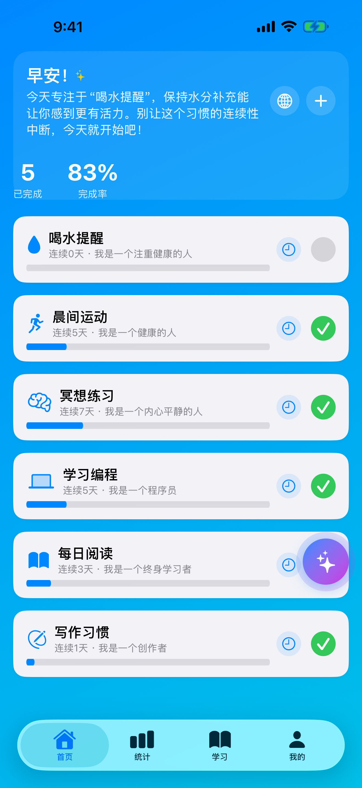
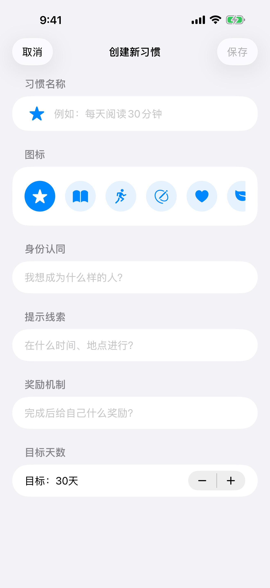
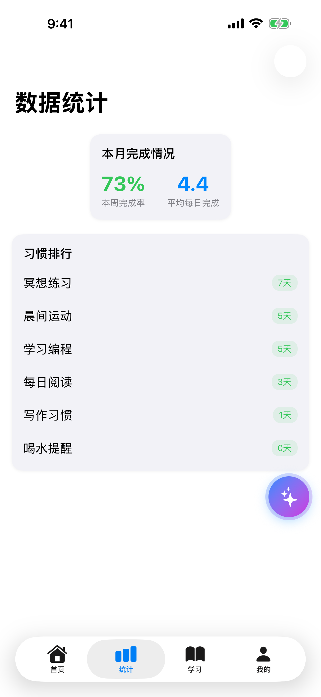
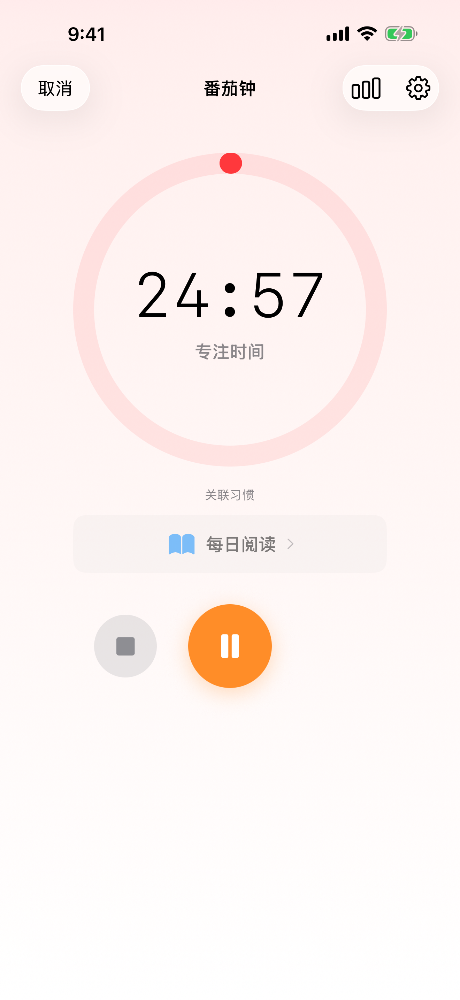

科学养成好习惯
从身份认同出发，用「提示 → 渴望 → 行动 → 奖励」的习惯循环，帮你建立并坚持真正长久的好习惯。
- 🔒 数据全本地
- 📶 离线可用
- 🌏 中英双语
30 秒，搭好你的第一个习惯回路
选一个身份、一个提示和一个奖励，右边就是它在 App 里的样子。
选择身份
选择提示
选择奖励
简单三步，开始改变
先想清楚你想成为谁，剩下的每天做一点。
定义身份
设定「我是一个……的人」的身份目标，比如「我是一个热爱运动的人」。
设计习惯
创建习惯，配置提示、行动与奖励，搭起属于自己的习惯循环。
持续追踪
每日打卡、专注番茄钟，累积连续天数，看着进度不断刷新。
强大功能，助您成功
为长期坚持而设计的每一个细节。
身份驱动
基于「我是……」的身份认同，从根本上重塑行为模式，让改变由内而外发生。
习惯循环
设置提示、渴望、行动与奖励，构建完整的习惯回路，让好习惯自动被触发。
番茄钟专注
内置番茄钟与习惯联动，专注时长自动记录，让坚持看得见、更有动力。
数据分析
可视化追踪进度，智能分析你的坚持规律，给出更贴合你的改进建议。
连续记录
激励性的连续天数记录，一天天累积成就感，不断挑战自己的最佳纪录。
中英双语
中英文界面随时一键切换，满足不同用户的使用习惯与语言偏好。
为你想成为的身份而设计
四种常见身份，四套现成的功能组合。
备考学生
「我是一个专注的人」
用番茄钟锁住专注时段，每日打卡稳住复习节奏。
健身新手
「我是一个爱运动的人」
给运动设好提示和奖励，用连续记录把热情变成惯性。
早起挑战者
「我是一个早起者」
从身份出发设定晨间流程，让每个清晨都强化一次「早起者」。
双语学习者
「我是一个每天学外语的人」
中英界面随心切换，用数据分析看清每天的坚持曲线。
为什么用 WeiRabits，而不是……
和普通待办清单、纸质打卡表放在一起看。
| 能力 | WeiRabits | 备忘录清单 | 纸质打卡表 |
|---|---|---|---|
| 身份驱动而非任务驱动 | ✓ | — | — |
| 提示-行动-奖励回路 | ✓ | — | — |
| 连续记录激励 | ✓ | — | 部分 |
| 内置番茄钟 | ✓ | — | — |
| 数据分析与建议 | ✓ | — | — |
| 免费无广告 | ✓ | ✓ | ✓ |
* 泛指常见清单工具与纸质表格的一般用法，不针对任何具体产品。
应用界面展示
左右滑动，点击可放大查看。




为什么是身份，而不是目标？
把《原子习惯》的核心理念，落成每天都能用的功能。
身份认同 → 「我是……」声明
目标会做完，身份会留下。WeiRabits 让每个习惯都挂在一个「我是……」的身份之下，每次打卡都是给这个身份投一票。
提示-行动-奖励 → 习惯循环
与其靠意志力，不如设计环境。为习惯配置提示、渴望、行动与奖励，好习惯会被环境自动触发。
复利效应 → 连续记录与数据分析
每天进步 1%，一年就是复利级的差距。连续记录和数据分析把这条看不见的曲线画给你看。
方法论灵感来自《原子习惯》（James Clear 著）；WeiRabits 与原书作者及出版方无任何隶属关系。
您的习惯，只属于您
没有账号，没有云端，没有追踪。所有习惯数据都保存在设备本地，卸载即彻底清除。
- 数据本地存储
- 离线即可使用
- 无任何追踪
- 无广告干扰
常见问题
WeiRabits 需要联网吗？
不需要。所有功能均可离线使用，您的习惯数据全部保存在设备本地，不会离开手机。
数据会同步到云端吗？
不会。数据只保存在您的设备本地，我们不上传、不收集、不追踪任何习惯信息。
什么是身份驱动的习惯养成？
从「我是一个……的人」出发设定身份，让每一次打卡都强化这个身份，习惯因此更容易长期坚持。
习惯循环是怎么运作的？
为习惯设置提示、渴望、行动与奖励，形成完整回路，让好习惯自然而然被触发和重复。
番茄钟如何与习惯结合？
可为需要专注的习惯启动内置番茄钟，专注时长会自动计入统计，帮助你看到坚持的成果。
支持哪些语言？
完整支持简体中文与英文界面，可随时一键切换。
完全免费吗？有广告吗？
完全免费，没有广告。下载后即可使用全部核心功能。
WeiRabits 和《原子习惯》是什么关系？
应用的方法论——身份驱动、习惯循环、复利式坚持——受《原子习惯》一书启发；WeiRabits 由 WeiProduct 独立开发，与原书作者及出版方没有任何隶属或合作关系。
立即开始您的习惯养成之旅
完全免费，无广告，注重隐私保护。
免费下载 · 无广告 · 尊重隐私